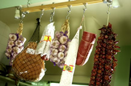
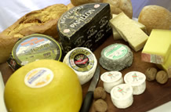
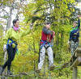

October 12, 2002
Grenoble, France
Fall Hikes, Adventure Parks and French Lessons
I've (Lisa) got the fall hiking fever. September and October are my favorite months of the year and I love being outside in the crisp autumn air and with the smell of fall. After several attempts on my part to rally the troops to go off on hikes in the nearby mountains were met with, "no - we don't want to go on another death march!," I decided that it was best for all of us if I struck out on my own. Mike agreed to watch the kids for a few days so I could go off and walk 'til I dropped. After agonizing over which mountain range would offer the best hiking -- for me that means being able to take lifts up high (as opposed to walking up!) then walking in the high mountains with spectacular views, few people and no road noise -- I chose Chamonix. I set off on a bright Monday morning in anticipation of blue skies and drop dead gorgeous mountain vistas, and found instead snow at 1300 meters, a permanent cloud that hung over the valley, and no mountain vistas in sight. Drat! Determined not to be discouraged, I found a place to stay and bought a hiking map of the area. I stayed for 3 days and the cloud never lifted! The lifts that were open go up to 1500 meters and higher and there was such pea soup up above that I was afraid I wouldn't be able to see one foot in front of the other, so I stayed low instead. I hiked in the valley at my own pace for 3 days and was in heaven. No whining or cajoling, just me and my happy feet that were willing to go for hours on end. Thank you, Mike!
I love mountain food - all those runny cheeses and fatty meats. I pretty much lived on a steady diet of ham and cheese in one form or another for those 3 glorious days. For breakfast I would have cafe au lait with bread or a croissant and a selection of cheeses. For lunch I would go to one of the specialty shops that sold local meats and cheeses and buy a hunk of cheese, a few slices of jambon cru, and a baguette. For dinner (see the pattern here?!) I would have a baked ham and cheese thing with wine. By day 3 even I was getting my fill of ham and cheese so that day I had escargot for lunch and mussels for dinner. Yum yum!
I decided to go home via Italy and explore the mountain pass between Italy and France. I went from Chamonix, France to Italy via the Mont Blanc tunnel - an amazing 11 km (7 mile) tunnel that goes right through the mountain between France and Italy. It just reopened this spring after a horrendous accident in March, 1999, where a truck caught fire and tons of people were trapped in the tunnel. The tunnel turned into a mass of melted cars and it took them a long time to fix it. It costs a fortune and it is eerie as all get out driving through it, but I was rewarded with a magnificent view of the Italian side of the Alps at the other end. Upon exiting the tunnel, there was a huge glacier staring me in the face!
I spent the night in Aosta - a darling Italian town with some Roman ruins still standing in the old part of the city. I decided to buy some Italian essentials before returning to France the next day. I spent the afternoon browsing through pasta shops, buying unlabeled and unfiltered olive oil, and stocking up on a few staples like polenta, balsamic vinegar, dried funghi, parmesan cheese, and Italian bread sticks. Then I strolled through the ruins soaking up their beauty. I had had a light lunch and was ready for dinner - at 6:00! Mama mia! In Italy, as in much of Europe, this is way too early. I scoped out a bunch of restaurants and my tummy growled a little louder when I saw that they opened between 7:30 and 8 pm. This was my only meal in Italy, so I wanted to make it a good one. I was tempted by one restaurant that was open at 6:30 - menu in English, tourists inside, EATING! You know the kind of place I'm talking about. I started to open the door, then thought, "No! I can do better than this." So I toured the old town for another hour and picked my restaurant. The menu was handwritten and I was able to pick out a few key words like gnocchetti, calamari, and funghi. That looked pretty promising, so in I went. What a great choice! I started with a selection of antipasti that I still dream about at night, followed by some homemade little gnocchi with a sauce like grandma used to make. I also randomly chose a half bottle of wine (pretty label!) and savored that as well. I didn't see any prices and was a little wary of what the check might look like - especially the wine. The grand total - about $20. The wine was a whopping $6! If I'd had my wits about me, I would have bought a case. Oh well, it's not like there's a lack of good wine in our lives here.
The next day I set off for home. Get this - bright blue skies, blazing sunshine, and finally, the mountain views in all their splendor! Ah well - there's always next year. It's times like these when I'm glad we are here for a year. If I miss something the first time around, I know there is time for another shot. I drove home via Torino, then up into the mountains. There was hardly anyone on the road (thankfully!) so i was able to enjoy the views and drive the curvy roads at my own pace without someone behind me almost touching my bumper and flashing their lights like it is a national emergency that I get the hell out of their way! Shortly after I crossed the border I drove by Briançon - a small town with a huge fortress built on a hill. I made a mental note to bring the boys back there sometime soon. I picked up some hitch hikers with climbing gear - two men and a woman. They were so thrilled that I stopped because they hadn't realized that their climbing route had taken them so far from their car and they needed to be back in Grenoble soon. When I dropped them off the man told me that he and his wife owned and restaurant in Grenoble and invited me to bring my family and have dinner on them! Pretty cool. It was hard to come back to the city at rush hour, but it was great to see Mike and the kids and know that I still have my little mountain vista by our breakfast nook and within minutes I can be back in the mountains.
Adventure Parks
Speaking
of mountains, the kids and I have been frequenting the "adventure
parks" here. They are like a mini-Outward Bound center with ropes
obstacle courses high up in the trees, trampolines where you are attached
to giant-sized rubber bands, and sometimes wild luge runs down the
mountains! We're hooked. Last week we ran into a tough course and didn't
get past the kid's course. I still have black and blues from the Tarzan
swing! We had to swing into a hanging cargo net, then climb up the net,
reattach our secure lines, and scramble onto a platform in the trees. I
pulled myself high on the rope thinking that this way I would hit the net
at a high place and wouldn't have to climb too far up the net, then
swung and promptly released my bent arms (too much gravity there!) and
fell low into the net. I frantically grabbed at it so I wouldn't swing
back to the starting point and end up in never-never land. It was quite a
.JPG) sight! Not terribly graceful, but I was then able to move to some of the
more fun stuff like the zip wire. The boys pretended that they were in
basic training and had a blast (except for the retched cargo net!). They
each did the long zip wire 3 times and screamed the whole way down. When
we finished the "kid course" I asked if they were ready to move on to the
adult course and they both said, to my relief, that they'd had enough!
Mike, not a fan of high places, is our paparazzi photographer.
sight! Not terribly graceful, but I was then able to move to some of the
more fun stuff like the zip wire. The boys pretended that they were in
basic training and had a blast (except for the retched cargo net!). They
each did the long zip wire 3 times and screamed the whole way down. When
we finished the "kid course" I asked if they were ready to move on to the
adult course and they both said, to my relief, that they'd had enough!
Mike, not a fan of high places, is our paparazzi photographer.
{kind=link}
Mariuccia Visits
Okay, so I'm not grocery shopping with a Gucci evening gown and heels, and compared to many French women on the street I look like the queen o' frump, but damn, am I having fun in the mountains!
My Italian aunt Mariuccia is visting for 2 weeks. She's a hoot and the
easiest and most pleasant guest in the world. She cooks great food and
then insists on cleaning up afterward. She won't allow Mike in the kitchen
despite his half hearted attempts to help her (yeah, right Mike!) She's
been
 making seafood risotto, gnocchi, polenta with sausages, and other
treats. She doesn't speak a word of English or French but manages to
communicate with everyone. I've been with her often enough that I don't
even try to translate for her because she says it is too much work for me
and she can manage well enough on her own. The gal is 78! She has also
been beading with me every afternoon and my stock of jewels is growing.
She's no speed demon - she is blind in one eye and only 70% in the other,
but she is having a blast!
making seafood risotto, gnocchi, polenta with sausages, and other
treats. She doesn't speak a word of English or French but manages to
communicate with everyone. I've been with her often enough that I don't
even try to translate for her because she says it is too much work for me
and she can manage well enough on her own. The gal is 78! She has also
been beading with me every afternoon and my stock of jewels is growing.
She's no speed demon - she is blind in one eye and only 70% in the other,
but she is having a blast!
She has made friends all throughout our neighborhood! The butcher loves her and although he speaks no Italian, they do fine. One day she was trying to explain a certain cut of meat she wanted. It was a stomach lining or something scary like that and she had a special dish she wanted to make with it. She went on and on trying to explain what it was (I was offering no help here, hoping that indeed such a disgusting thing didn't exist in France) and soon she had the 3 people working there, along with several customers, trying to problem solve for her! After about 10 minutes, she gave up and we bought some mundane pork chops and moved on. Our next stop was a new Italian take out store called Pronto a la Tavola. This is just up the street from our butcher and had just opened this week. This time she starts telling the owner about her search for "la cima" and he says, oh si, si - there is a very good butcher across the street - just ask him and he'll have it for you. I'm cracking up by now, and another customer in this store who had followed us from the butcher's began discussing the whole problem in French with the (bilingual) owner. What a drama! Finally, the woman looks at me and says, "Oh yes, he has what she is looking for." I smiled weakly and tried to distract my aunt with the various delicacies in the food case. Although she seems to have given up on la cima project, it has made us great friends with the butcher and the Italian store owner. Oh yeah, we also discovered that the owners of our local frutier (fruit and veggie shop across the street) are both Italians and she is on a first name basis with them too. On my way to take Evan to circus school the other day I got a hearty "buon giorno" from the Italian. Evan asked me who he was, and I just told him that it was a long story! The long shot is that I think I will have to lock Mariuccia up here so she can't go back home. Plan B is to have her come back for Thanksgiving when Jody and Steve, and hopefully Jody's folks, Jack and LaRita, are coming. Meanwhile, Aunt Mo and baby Lia will be here in a week and we can't wait!
I can't say that my French is improving much, but my Italian is certainly getting better! That's it for now from me. As always, we love getting news from our friends.
Read about Mike's French Lessons